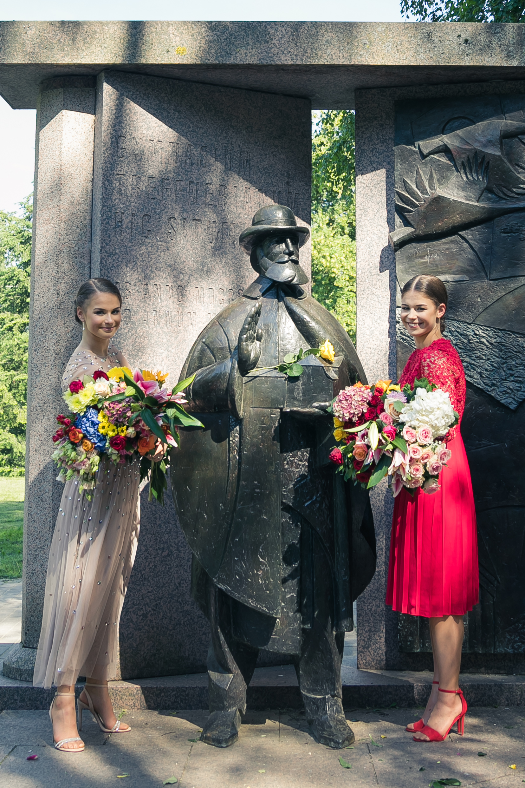

<!DOCTYPE html>
<html lang="et">

</html>

<head>
    <meta charset="UTF-8">
    <link href="meist.css" rel="stylesheet">
    <link href="Webpage_Style.css" rel="stylesheet">
    <title>Meist</title>
</head>

<body class=meist>

    <div class="dropdown">
        <span>
                    <div class="burger">
                        <div class="line1"></div>
                        <div class="line2"></div>
                        <div class="line3"></div>
                    </div>
                </span>
        <div class="dropdown-content">
            <p><a href="nimeta_ümber.html">Home</a></p>
            <p><a href="essavaheleht.html">Tutvustus</a></p>
            <p><a href="meist.html">Meist</a></p>
            <p><a href="galerii.html">Galerii</a></p>
        </div>
    </div>

    <h1 class="meistpealkiri">&boxh;&boxh;&boxh; Meist &boxh;&boxh;&boxh;</h1>

    <div class="tutvustus">
            
        <p class="tekst">
            Meie oleme kaksikud Sandra ja Sarah. Oleme 19 aastat vanad, sündinud Tartus ning elame siin siiani. 2016 aastal lõpetasime mõlemad Tartu Descartes'i kooli ning 2019 aastal Hugo Treffneri Gümnaasiumi. Hetkel õpime Tartu Ülikoolis informaatikat.
        </p>
        
        <p class="tekst1">
            Vabal ajal meeldib meile tegeleda spordiga. Oma elust 9 aastat tegelesime iluvõimlemisega, millega seoses osalesime ka mitmetel rühmvõimlemise maailmakarikaetappidel. Hetkel tegeleme juba viiendat aastat tantsulise võimlemisega rühmas Vk Janika Tantsuline Eliit, millega oleme saavutanud mitmeid esikohti, sealhulgas tulnud showtantsu Euroopa meistriteks. 2019. aastal osalesime tantsufestivalil Kuldne karikas ka disco duoga, millega õnnestus meil saavutada esikoht.
        </p>
        <iframe class="video" src="https://www.youtube.com/embed/o2loyhcHuic" frameborder="0" allow="accelerometer; autoplay; encrypted-media; gyroscope; picture-in-picture" allowfullscreen></iframe>
        
    </div>

</body>

</html>